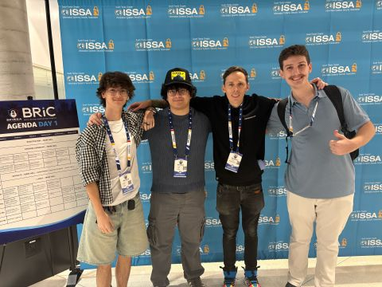
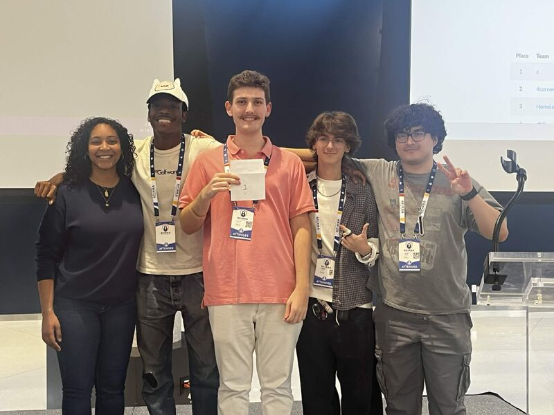
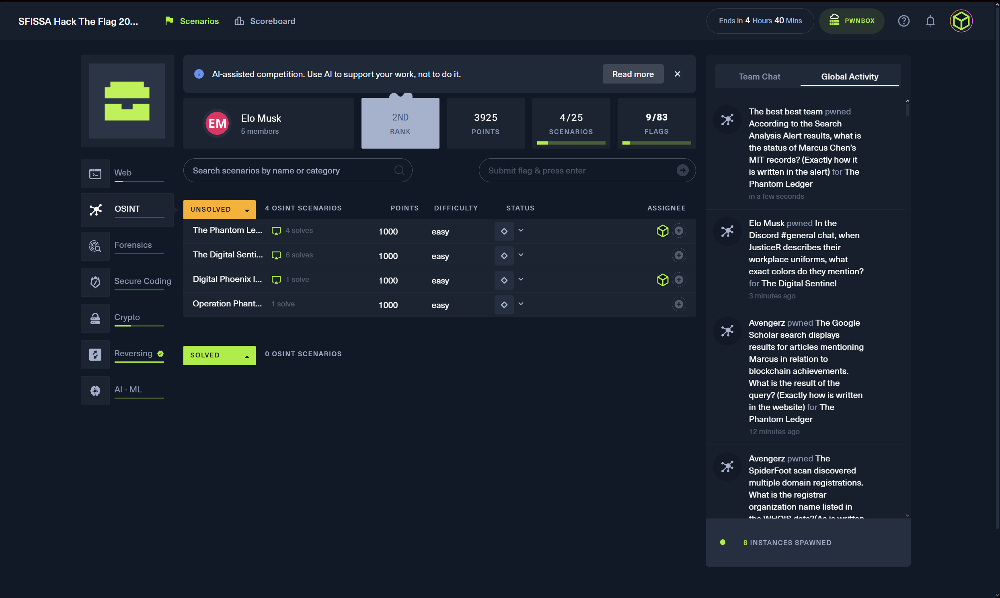
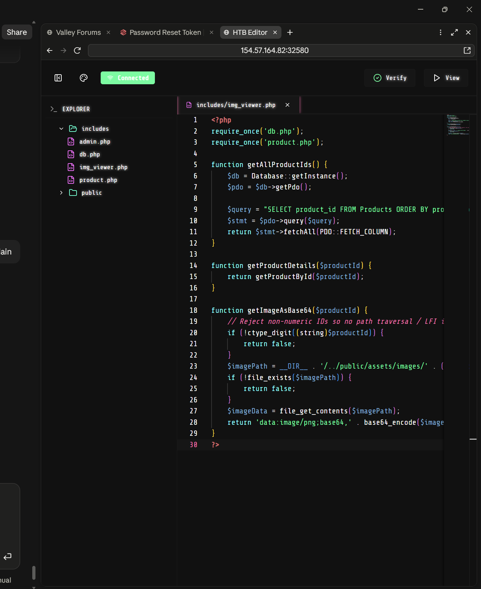

SFISSA's 2026 Chili Cookoff and Hack the Flag ran back to back, one day of networking with security companies and practitioners, the next day of actually competing. I went with the FAU Cybersecurity Club for both, and came back with a top finish in the CTF.
Day one, the cookoff
The first day was less about hacking and more about the people in the room. Forta and Christopher Rios spent time helping me rework how I present and revise my resume, which is worth more heading into an internship search than any single conversation usually is. Horizon3.ai gave a live demo of their product, walked through by Nicholas Morris, Jeff McCance, and their engineer Christopher. I also got to meet Ryan Montgomery, whose work I'd been following for a while. Between the demos and the conversations, it was the kind of day that's easy to undervalue in the moment and only pays off later.
Day two, the CTF

This year's Hack the Flag ran under a "Humans vs. Agents" format, human teams competing on the same board as an AI-driven team, on the condition that AI was meant to support the work, not do it outright. Our team, Elo Musk, Jorge Ortiz, Marcos Hanono, Shaamad Allison, Aliyah Khan, and myself representing FAU, worked across 83 flags spanning Web, OSINT, Forensics, Secure Coding, Crypto, Reversing, and AI/ML categories over the course of the day.
The AI team ended the day ranked above us on the board, but was disqualified from scoring per the event's rules, which put our team at 1st among human teams and 2nd overall. We closed with 82 of 83 flags and 19,650 points, out of 33 teams total.

What the challenges looked like
The OSINT category ran a set of fictional-but-detailed scenarios, correlating a subject's identity across forums, code registries, and public records to pull out one specific fact buried in the noise, the kind of challenge where the answer exists but only if you cross-reference three unrelated sources correctly. Secure Coding handed us intentionally vulnerable PHP apps to patch rather than break, one of the finds was a path traversal in an image-loading endpoint that took a product ID straight into a file path with no validation, fixed by enforcing that the ID was strictly numeric before it ever touched the filesystem.

The rest of the board covered web exploitation, binary reversing, and a handful of AI/ML-specific scenarios, new territory compared to the network and Windows defense focus most of our competition prep had been built around.

Key takeaway
Competing against an AI team on the same board was a good gut check for where the actual edge still is: coordination across five people, splitting categories by strength, and catching the cross-referenced detail an automated pass glosses over. The two days together were also a reminder that competing well and showing up for the non-competition parts, resumes, demos, conversations with people further along than you, aren't separate tracks. Thanks to SFISSA for hosting.